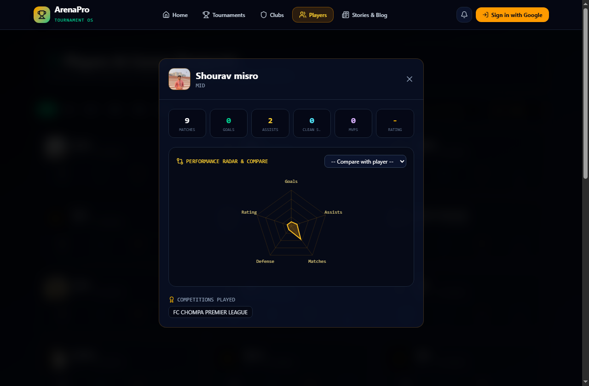

Club News • By ArenaPro Editorial • 5 min read
Why Local Clubs Need Persistent Rosters & Verified Player Career Passports Across Seasons
Key Takeaways
- Players build a multi-season track record instead of resetting to zero every tournament.
- Clubs can stay open for recruitment year-round with structured join applications and manager approvals.
- 5-Axis SVG Performance Radars let captains scout and compare players visually across Attack, Playmaking, Appearances, Defense, and Rating.
From One-Off Weekend Cups to Real Club Identity
In most local sports scenes, teams form for three weeks, play a cup, and vanish from memory. Creating a permanent Club gives captains a home ground, crest, motto, trophy cabinet, and year-round squad roster.
Players looking for a weekend game can browse recruiting clubs by city and apply directly—no more asking friends of friends for an open spot.
Visual Scouting with Career Passports & Radar Comparisons
Every time a verified player competes in a public ArenaPro tournament, their Career Passport aggregates their total appearances, goals, assists, clean sheets, MVPs, and ratings automatically.
Captains preparing for an upcoming auction can open any player’s Career Passport and overlay a second player on the 5-Axis Performance Radar to spot undervalued midfielders or clinical finishers.

Frequently Asked Questions
How are career stats calculated across multiple tournaments?
ArenaPro aggregates player stats across tournaments by matching their verified Google UID (or player name for legacy rosters) and computing totals and average match ratings.
Can any player edit their global Career Passport bio and portrait?
Yes. Signed-in users can update their display name, preferred position, preferred foot, city, bio, and compressed portrait from the Players directory.